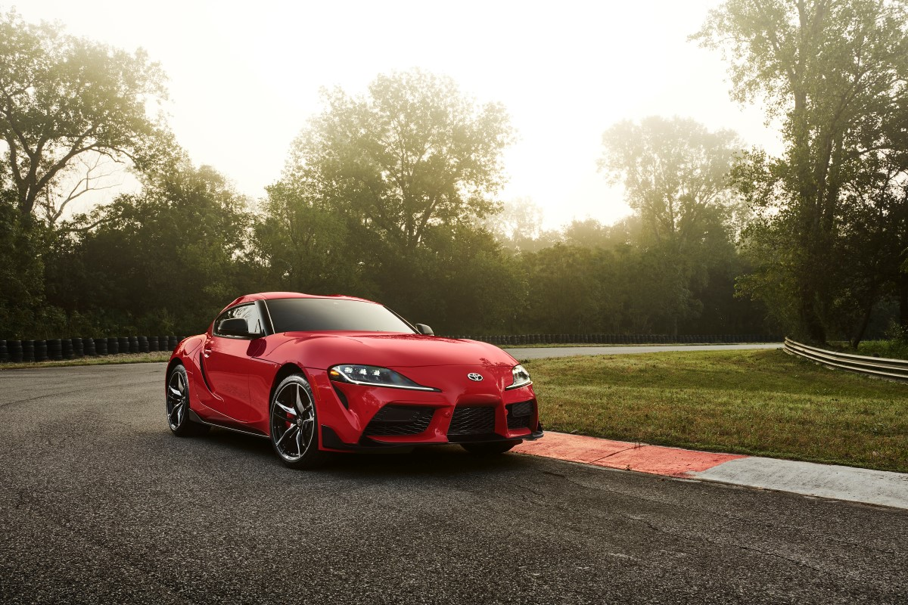
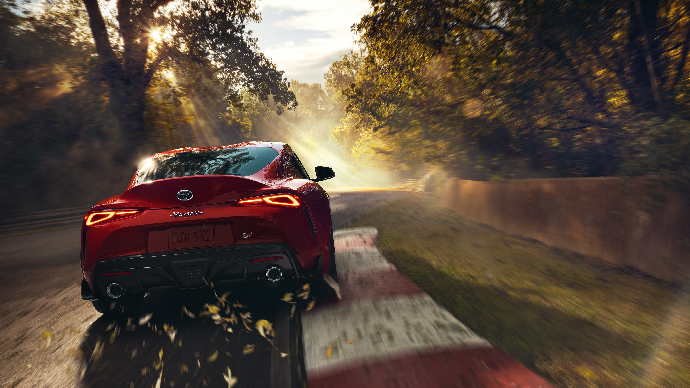
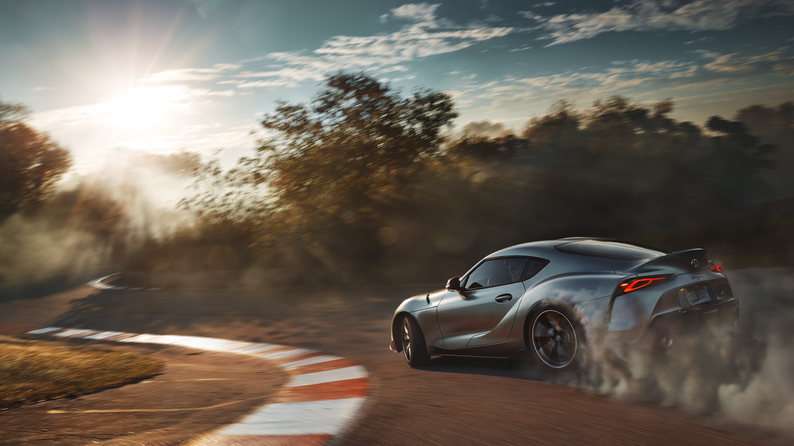
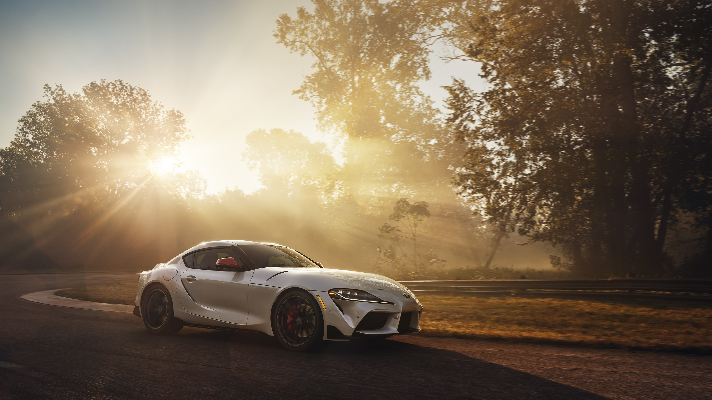

All New Toyota GR Supra

All-new Supra รถสปอร์ตระดับตำนาน คืนชีพอย่างเป็นทางการพร้อมเครื่องยนต์เทอร์โบชาร์จ 3.0 ลิตร ที่มีกำลังสูงสุด 335 แรงม้า เหยียบจาก 0-100 กม./ชม. ในเวลา 4.3 วินาที และความเร็วสูงสุดอยู่ที่ 250 กม./ชม. ครองตำแหน่งโมเดลที่เร็วที่สุดของ Toyota ในปัจจุบัน โดยประกาศราคาขายในประเทศสหรัฐฯ เริ่มต้นที่ 49,000 ดอลล่าร์หรือราว 1.51 ล้านบาท พร้อมส่งมอบช่วงซัมเมอร์นี้
|  |  |  |
All-new Supra ยังคงรักษาเอกลักษณ์ที่สืบทอดมาตั้งแต่เจเนอเรชั่นแรกที่เปิดตัวเมื่อปี 1978 ด้วยการเป็นรถสปอร์ตเครื่องยนต์แถวเรียง 6 สูบ (Inline Six-cylinder) วางหน้าขับเคลื่อนล้อหลัง แต่เป็นครั้งแรกที่พัฒนาโดยวิศวกรจากทีมแข่ง Toyota Gazoo Racing ที่ให้ความสำคัญกับ 3 องค์ประกอบพื้นฐานคือ ระยะฐานล้อ, ผิวสัมผัสของยางกับพื้นถนน และจุดศูนย์ถ่วง เพื่อสร้างรถสปอร์ตที่มีสมรรถนะการควบคุมที่ดีที่สุด